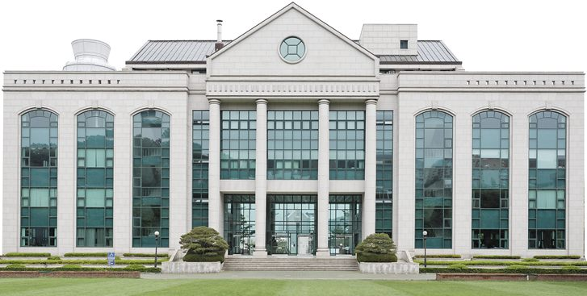

울산대학교는 울산 남구 무거동에 캠퍼스를 둔 사립대학입니다. 울산 지역의 대표 종합대학이고, 서울아산병원과 연결된 의예과로도 이름이 알려져 있습니다. 2023년 교육부 글로컬대학에 선정된 뒤 6개 단과대학 융합학부 체제로 개편해, 입학 후 2학년부터 학부 안에 개설된 트랙을 고르는 방식으로 운영된다고 보도됐습니다.
2027학년도 울산대는 정원 내 2,400명대 가운데 약 95%인 2,300명대를 수시로 선발합니다. 사실상 신입생 대부분을 수시로 뽑는 대학입니다. 원서접수는 9월 7일부터 11일까지 진행돼 이미 마감됐고, 전체 경쟁률은 4대1 수준으로 지난해와 비슷했습니다. 모집단위별로는 의예과가 9대1대로 가장 높았고 간호학과가 뒤를 이었습니다.
이 글은 원서를 낸 고3에게는 남은 일정과 수능최저를, 고1·고2와 중학생 부모님께는 울산대 수시가 어떻게 짜여 있는지를 정리하는 데 초점을 맞췄습니다.
① 교과 전형 — 수능최저가 단과대학마다 다릅니다
학생부교과 유형의 중심은 일반교과전형과 지역교과특별전형입니다. 일반교과전형은 학생부 100%로 선발하고, 디자인융합학부·예술학부를 제외한 모집단위에 수능최저학력기준을 적용합니다. 보도된 기준은 모집단위에 따라 폭이 넓습니다.
- 아산아너스칼리지 자율전공학부 — 국어·수학·영어·탐구(1과목) 중 2개 영역 등급 합 6 이내
- 간호학과 — 2개 영역 등급 합 7 이내(수학 필수)
- 미래엔지니어링융합대학 — 2개 영역 등급 합 10 이내
- 스마트도시융합대학·경영·공공정책대학·글로벌인문학부 — 1개 영역 5등급 이내
같은 교과 전형인데 자율전공학부는 2개 합 6, 공학 계열은 2개 합 10, 인문·경영 계열은 1개 영역 5등급입니다. 원서를 쓴 모집단위가 어느 단과대학에 속하는지부터 확인해야 남은 두 달의 공부 순서가 정해집니다. 1개 영역만 보는 모집단위라면 가장 자신 있는 한 과목의 등급을 지키는 데, 수학이 필수인 간호학과라면 수학에 먼저 시간을 두는 식입니다.
② 올해 새로 생긴 학교장추천전형
2027학년도의 새 항목 중 하나는 학교장추천전형입니다. 소속 고등학교장의 추천을 받은 재학생만 지원할 수 있고, 아산아너스칼리지 자율전공학부에서 40명 규모를 뽑습니다.
- 학생부 100%, 면접 없음
- 수능최저 미적용
- 대신 학생부 교과 성적 3.00 이내라는 지원 요건이 있습니다.
자율전공학부는 올해 전년보다 50명 늘어난 150명 규모(수시 140명 규모)를 뽑고, 입학자에게 장학금·해외연수·기숙사 등의 혜택이 제공된다고 보도됐습니다. 수능최저 없이 내신과 학교 추천으로 들어갈 수 있는 문이 생긴 셈이라, 학교별 추천 인원과 교내 추천 기준이 실제 관문이 됩니다. 고2라면 담임 선생님께 학교의 추천 절차를 미리 여쭤 두시길 권합니다.
③ 잠재역량전형 — 면접은 세 모집단위에만
학생부종합 유형의 중심은 잠재역량특별전형입니다. 지난해까지는 모든 모집단위에서 면접을 봤지만, 올해부터는 자율전공학부·의예과·간호학과에만 면접을 남기고 나머지 모집단위에서는 폐지했다고 보도됐습니다.
- 면접이 있는 세 모집단위 — 1단계 서류평가로 면접 대상자를 뽑은 뒤 2단계 면접으로 최종 합격자를 가립니다. 1단계 선발 배수는 자율전공학부·간호학과 4배수, 의예과 5배수입니다.
- 그 밖의 모집단위 — 면접이 없어졌으니 학생부 서류 자체가 평가의 전부에 가까워졌습니다. 세부 평가 방식은 모집요강에서 확인하십시오.
면접이 사라진 모집단위에 지원했다면 수시 원서 이후에 할 일이 줄어든 대신, 이미 제출된 학생부로 결과가 갈립니다. 반대로 고1·고2에게는 지금 쌓이는 세부능력 및 특기사항이 곧 면접을 대신하는 자료라는 뜻입니다.
④ 부산·울산·경남 지역인재와 지역의사제
학생부종합 지역인재특별전형은 부산·울산·경남 지역 고등학교 출신을 대상으로 학생부 정성평가로 선발하며, 의예과는 면접이 포함됩니다. 지역인재 의예과에는 국어·수학(미적분·기하 중 선택)·영어·과학탐구(2과목 평균) 중 3개 영역 등급 합 4 이내, 한국사 4등급 이내의 수능최저가 붙는 것으로 보도됐습니다.
2027학년도 지역인재는 해당 권역 고등학교에서 3년 과정을 이수하는 것이 기본 요건입니다. 2028학년도부터는 중학교 과정부터 해당 지역에서 이수·거주하도록 요건이 강화되니, 지금 중학생 자녀를 두고 이사나 타 지역 고교 진학을 고민하신다면 꼭 따져 보셔야 합니다.
또 하나의 신설 항목은 지역의사제특별전형입니다. 의예과에서 5명 규모를 뽑으며, 보도에 따르면 창원·진주·통영·김해·거창권으로 나눠 권역마다 1명씩 선발합니다. 졸업 뒤 지역 의료 근무와 연결되는 제도인 만큼, 지원 자격과 입학 후 의무 조건을 모집요강과 관련 안내에서 반드시 읽어 본 뒤 판단하셔야 합니다.
⑤ 원서 이후 체크리스트
- 면접 일정 — 보도된 일정은 11월 28일 지역인재전형(의예과)과 잠재역량전형(자율전공학부·간호학과) 면접, 12월 5일 잠재역량전형(의예과) 면접입니다. 실기고사는 10월 초부터 시작됩니다. 1단계 발표일과 준비물은 입학처 공지로 확인하십시오.
- 교과로 썼다면 — 모집단위의 수능최저를 한 줄로 적어 두고, 기준에 들어가는 영역부터 공부 시간을 배분하십시오.
- 면접이 없어진 잠재역량 모집단위라면 — 추가로 준비할 평가는 없지만, 수능과 다른 대학 일정이 겹치지 않는지 달력에 정리해 두십시오.
- 고1·고2라면 — 학교장추천의 교과 성적 요건(3.00 이내)처럼 내신 숫자가 곧 지원 자격이 되는 전형이 늘고 있습니다. 2학기 내신을 먼저 지키십시오.
- 울산·경남 중학생 부모님이라면 — 2028학년도 지역인재 요건 강화가 고교 진학 계획과 맞는지 살펴보십시오.
정리하면
울산대 2027 수시는 신입생 대부분을 수시로 뽑고, 교과는 모집단위별 수능최저로, 종합은 대부분 서류로 승부하는 구조가 됐습니다. 면접이 남은 곳은 자율전공학부·의예과·간호학과, 새로 열린 문은 학교장추천과 지역의사제입니다. 어느 길이든 결국 내신 성적과 학생부 기록, 그리고 필요한 만큼의 수능 등급을 함께 끌고 가야 합니다.
와와 학습코칭센터에서는 아이의 내신과 수능 과목별 상태를 진단해, 목표 대학·모집단위의 기준에 맞춰 지금 무엇부터 채워야 할지 함께 정리해 드립니다. 가까운 센터에서 무료 상담을 받아 보실 수 있습니다.
※ 본 글의 모집규모·전형 구성·수능최저·면접 일정·경쟁률은 울산대학교의 2027학년도 수시모집 관련 언론 보도를 바탕으로 정리했으며, 인원 수치는 이해를 돕기 위해 범위로 표기했습니다. 전형별 세부 모집인원(일반교과·지역교과·잠재역량·지역인재 등), 학생부 반영 교과와 학년별 반영 비율, 면접이 없는 잠재역량 모집단위의 세부 평가 방식, 지역교과특별전형의 수능최저, 1단계 합격자 발표일과 최종 합격자 발표일, 지역의사제특별전형의 지원 자격과 입학 후 의무 조건, 자율전공학부 장학금·혜택의 세부 조건은 본 글에 담지 않았거나 확정 표기하지 않았습니다. 사진은 과거에 촬영된 것으로 현재 모습과 다를 수 있습니다. 반드시 울산대학교 입학처의 2027학년도 수시모집요강 원문에서 본인 지원 모집단위 기준으로 최종 확인하시기 바랍니다.